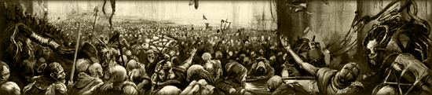
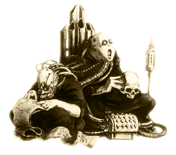
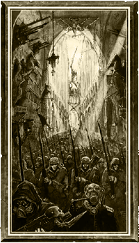

| |
Impérium
Az
emberiség birodalma

Az emberi birodalom a
leghatalmasabb csillagközi szövetség, amit a galaxis valaha látott.
Kezdve a szent Terratól,
egészen a keleti perem és a távoli
külsõ gyûrû csillagainak határáig
húzódik. Világok millióit és
halandó lelkek végtelen óceánját
öleli magába. Ura és parancsolója
a halhatatlan Istencsászár, az
emberiség egyetlen támasza, a
megtört testû élõhalott istenség,
aki tízezer éve szenved színarany
trónprotézisébe
börtönözve.
Terra (az
egykori Föld) mélyén írnokok
egész légiója fáradozik szüntelen,
hogy összeszámlálja a Birodalom
teljes népességét. Azonban ez a
feladat remény és minden
bizonnyal vég nélküli, hiszen a
Császár ismert birodalma magába
szippant és benépesít minden
világot tekintet nélkül: bunkók-
kal
felszerelt vadak által lakott trópusi
poklok, jeges tundrák,
gleccserekbe vájt gigantikus városokkal,
perzselõ sivatagbolygók, túlnépesedett
ipari világok, melyek felszínén billiók élnek
roppant bolyvárosokban és óriási,
a vallásnak alárendelt planéták,
ahol minden épület a Császár
hitének dicsõségét hirdeti.
Ilyen sokszínûség mellett az emberiség is igen nagy változatosságot
mutat A különbözõ bolygókon élõ
emberek és kultúrák teljesen eltérõek
lehetnek, saját szokásokkal, megjelenéssel
és tradíciókkal.
Maga Terra egy kiterjedt bolyvilág, mely mára
már teljesen terméketlenné vált. Fémmel borított
sötét felszínét, tornyok és roppant gótikus
katedrálisok borítják. Az õsi romokat zarándokok
masszív tömegei özönlik el szüntelen, hogy hálával
adózzanak az emberiség ura, a halhatatlan
Istencsászár elõtt. Az eltelt évezredek alatt
felépített megszámlálhatatlan réteg fém és
kõ alatt, Terra nem más, mint egy élettelen
sziklatömb, óceánjai már régen elpárologtak.
Patinával borított vízköpõk okádják
sziszegve a sûrû gõzöket a szennyezett légkörbe,
és régmúlt idõk szentjeinek omladozó szobrai
bámulják vakon az alattuk vonagló esztelen
sokaságot. A zarándokok végsõ célja, a gótikus fenség
megtestesítõje, a Birodalmi Palota. Ám a cél
legtöbbjük számára elérhetetlen, hiszen életük
fonala még azelõtt letelik a végeláthatatlan sorokban vándorolva, hogy a
palota látványa feltûnne a horizonton. Azonban
Terra földjének érintése mégis oly erény,
melyrõl a Birodalom legtöbb lakosa csak álmodhat.
| Messze a zsúfolt sorokban kígyózó zarándokoktól,
Terra mélyén, írnokok és lexikánusok milliói
gürcöl- nek szakadatlan, gyertyafénnyel átitatott
másolószo- báikban, hogy évezredes szám és
adathalmokat rendszerezzenek, melyek eredete már
úgyis régen a feledés homályába veszett. Mélyen a föld
alatt kontinensnyi méretû archívumok fekszenek
csendes nyugalomban. Antikvitástól poros folyosóikon,
pergamenek, könyvek és adatkristályok légiói
sorakoznak, melyeket valószínûleg az idõk végezetéig
olvasatlanul állnak majd tömött
polcaikon.
Munkájuk megértése iránti vágy teljes hiányában
gürcölik végig |
 |
|
| életüket, az itt dolgozó
alantas hivatalnokok. Minden nap ugyanazt az ismétlõdõ
feladatot végezve vég nélkül. Így volt ez a régmúlt
idõkben is, és így lesz örökkön örökké. |
Azonban az írnoksereg csupán parányi része
annak a roppant szervezetnek, amit úgy hívnak,
hogy Adeptus Terra. Egy hatalmas, önmagát
tápláló bürokrácia-óceán, alantas
tisztviselõk és más, magasabb rangú
hivatalnokok légióval. Mindannyiuk közül a
leghatalmasabbak, és a legnagyobb befolyással
rendelkezõk, Terra Fõurai. Õk a legfõbb
tanács, mely az Impérium tizenkét legbefolyásosabb
emberét foglalja magába, akik a halhatatlan
Istencsászár nevében a Birodalmat kormányozzák.
Parancsaik az öt szektorkormányzón át, érik
el a szektorok, majd az al-szektorok urait. Így a
Császár akarata minden birodalmi világ kormányzójához
elérhet.
A gyakorlatban azonban, a roppant távolságok
és a világok közt sokszor fennálló kommunikációs
elszigeteltségnek köszönhetõen, ez a feladat
gyakran a megvalósíthatatlanság adamantium falába
ütközik. Már maga az Impérium hatalmas mérete
is kizár mindenféle, a központi irányításra
tett kísérletet. Az egyes világok között fennálló
kommunikáció idõszakos hiánya gyakran okozza
egész planéták anarchiába való süllyedését.
Vannak olyan bolygók is, melyek egyszerûen csak
elfelejtõdnek, észrevétlenül átcsúszva a
birodalmi bürokrácia hézagai közt. Egy segítségért
való fohász ugyan eljuthat a Birodalom fülébe,
ám gyakran megesik, hogy a segítség akár évszázadokat
is késik, hiszen idõ kell mire átjut a megszámlálhatatlan
hivatalnokok seregén, és eléri azt a kezet, aki
ügyében cselekedhet. Egyáltalán nem ritka,
hogy hadiflották és egész seregek érkeznek meg
úgy a csatatérre, hogy a háború, amelyért oly
sokat utaztak, már régen feledésbe merült.
|  |
Azon világok mellett, amik hanyagság vagy
a birodalmi bürokrácia hálójában való
elveszejtés következtében süllyednek a barbárság
vagy a központi rend hiányának mocskába,
akadnak olyanok is, akik szánt szándékkal
tagadják meg a Császár parancsait, tudatlanul
is elõsegítvén
önnön bukásukat. Az árulók és az elégedetlenkedõk,
gyakran hiszik azt vakmerõségükben, hogy életükkel
nem a Császárnak adóznak, és megtagadják az
engedelmességet, önmaguknak követelve világaikat.
Amíg a központi hatalom fényévek távolságába
vész, a zendülés és az önállósodás veszélye
mindennapos gondnak számít a Birodalmon belül.
Azonban az Impérium seregei irgalom nélkül
tapossák el az elégedetlenkedõket és végzik
ki a lázadó vezetõket, mielõtt a felkelés tovább
burjánzhatana. Az árulóknak nincs kegyelem, csak
ilyen kegyetlen és elnyomó közigazgatás
mellett lehet remény egy ekkora birodalom belsõ
rendjének fenntartására. Csak ilyen drasztikus,
és kegyetlen módszerekkel élheti túl az
emberiség az ellene felsorakozott falkák támadásait. |
Messze a Terrától, a roppant méretû
feltérképezetlen ûrben, ahol megtagadják az
Impérium törvényeit, ahová már nem ér el a
Császár fényessége, túl a keleti peremen, húzódik
az ûrnek egy olyan térsége, ahol az Birodalom nem több mint egy réges-régen
a feledés homályába
veszett mítosz. Természetesen számos birodalmi
világ található a galaxisnak még e távoli
szegletében is, ám ezek oly távol esnek Terra
szent földjétõl, hogy sokszor évszázadok is
eltelnek anélkül, hogy akár csak érintkezésbe lépnének
a Birodalommal. Az ûrnek e távoli peremvidéke kétségtelenül
az Impérium által uralt ûr határát is jelenti,
ahol az elképzelhetetlenül vén külsõ gyûrû
csillagai reszketõ lidércfényeknek tûnnek a
galaxis pereme mentén. Az ismert világ legöregebb
csillagai ezek, kísértetjárta, rettegett
helyek. Azok, akik felfedezésükre adták a fejüket,
sosem tértek vissza.
Noha egész világok semmisülnek meg, és
milliók halnak meg minden egyes eltelt évben, a
Birodalom számára õk nem mások csupán
statisztikai adatok, apró zsarátnokok pusztán,
melyek eltûntek és a feledés homályába
vesztek a galaxis sötét függönye mögött,
hogy új, ragyogóbb fényeknek adják át helyüket,
mielõtt egyáltalán valaki észrevenné eltûnésüket.
Talán ezer év múlva, Terra egyik sötét
kazamatájában, egy írnok feljegyzi a veszteségeket, de
sokkal valószí- nûbb,
hogy erre soha nem kerül sor…
Fordította: Rince
(A fordítás a hivatalos Warhammer
40.000 szabálykönyv alapján készült.)
|
|